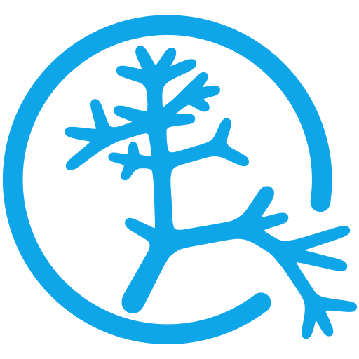

Chargement…
1 doigt : tourner · 2 doigts : zoom · 2 taps : recentrer
Légende
Contact

🥐
Français
🫖
English
Explorer l'île en 3D
J'ai la carte de visite
Visez la carte avec le téléphone
Faire depuis n'importe où
L'île se pose sur une table ou le sol
Faire depuis n'importe où
Vue 3D Apple : l'île seule, sans organismes
Chargement…
Retour
Revenir aux options
Déplacer l'île
Relief seul
Détections IA
Immersion